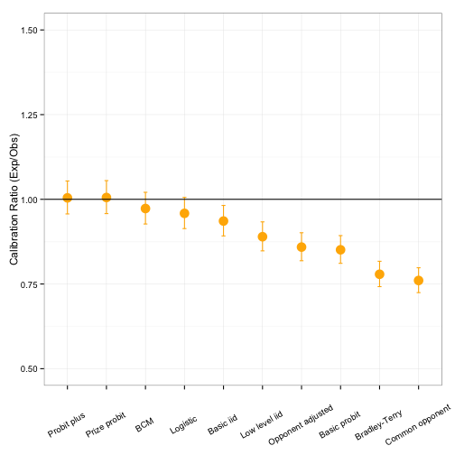
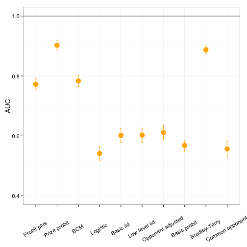
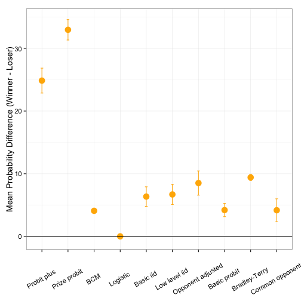

Predicting Wins in Tennis
Forecasting the winner of a competition is a fascination of all sports
Tennis has a long history of interest (and frustration) with predicting match outcomes
Stephanie A. Kovalchik, skovalch@rand.org
2015 Mathsport International
Forecasting the winner of a competition is a fascination of all sports
Tennis has a long history of interest (and frustration) with predicting match outcomes
It would have puzzled the canniest card in the business all the same to pick a winner out of these gentleman, any one of which was liable to develop a streak and win out.
Lawn Tennis Guide, 1898

For most of its history, tennis has lacked formal models to predict wins
Around 2000, the first quantitative approaches for prediction began to appear
Since then a number of models have been published
In this talk, I will categorize models into 3 broad classes:
Though these forecasts are fascinating, what is really needed is a comparison of the forecasting accuracy of various methods. Then we can judge which forecasts to use in our fantasy leagues, draft decisions, or player personnel decisions. For example, who predicts future baseball performance better: Ron Shandler or Bill James? Perhaps in the future databases of accuracy of sports forecasts (and stock pickers) will be commonplace on the Internet.
W. L. Winston, Mathletics: How Gamblers, Managers, and Sports Enthusiasts Use Mathematics in Baseball, Basketball, and Football
As sports analysts and fans, we think a lot about performance and how athletes stack up against their competitors
Yet, attention to the comparative performance of prediction models in sport is often absent (at least from scholarly literature)
Tennis is no exception
Distinguishing better models from worse models can help shed light on determinants of wins
It is also important for improving future forecasts for the sport

The purpose of this study was to identify published models to predict the winner of a professional singles match in tennis
The study design had 3 phases:
Review of abstracts for relevant articles identified from Google Scholar and their citations
17 articles were screened with exclusion criteria
10 models were included in the validation analysis
Causes for Exclusion
Four of the included models are or are extensions of the basic iid model proposed by Newton and Keller, which assumes that points won on serve and return are independent and identically distributed (iid) Bernoulli trials
Given the probability of winning a point on serve and return, explicit formulae can be derived for the probability of winning a game, tiebreak, set, and match
The models differ in how the probabilities of serve and return are estimated
| Model | Developer | Serve and Return Probabilities |
|---|---|---|
| Basic iid | Newton and Keller, 2005 | Player-specific average |
| Opponent-adjusted iid | Barnett and Clarke, 2005 | Average with correction for opponent serve and return ability |
| Low-level iid | Spanias and Knottenbelt, 2012 | Estimated from component events (aces, first serve wins, etc.) |
| Common opponent iid | Knottenbelt et al., 2012 | Serve and return averages among a common set of opponents |
Four models propose a regression relationship between predictors and the probability of winning a match
Unlike point-based models, these model a match win directly and make no assumptions about characteristics of points within a match
The models differ in the set of predictors included though ALL include player rank/seeding in some form
| Model | Developer | Distribution | Predictors |
|---|---|---|---|
| Logistic | Klaassen and Magnus, 2003 | Logistic | Rank differntial |
| Basic probit | Boulier and Stekler, 1999 | Probit | Seeding differential |
| Probit plus | Del Corral and Prieto-Rodriguez, 2010 | Probit | Player-opponent differences in rank, demographics |
| Prize probit | Gilsdorf and Sukhatme, 2008 | Probit | Potential loss in prize money, head-to-head results, demographics |
| Predictor | Logistic | Basic probit | Probit plus | Prize Probit |
|---|---|---|---|---|
| Difference in seeds | + | |||
| Difference in ranks | + | + | ||
| Previous tournament result | + | |||
| Former top 10 player | + | |||
| Difference in age | + | + | ||
| Difference in height | + | |||
| Handedness | + | |||
| Potential prize earnings | + | |||
| Head-to-head wins | + | |||
| Head-to-head losses | + | |||
| Difference in rank points | + | |||
| Difference in career wins | + | |||
| Rounds remaining | + | + | ||
| Grand Slam indicator | + | + | ||
| Masters 1000 indicator | + |
| Model | Developer | Description |
|---|---|---|
| Bradley-Terry | McHale and Morton, 2011 | Probability of a win is equal to relative ability; Abilities are estimated from game wins over 6 or more months of matchplay |
| BCM | Leitner et al., 2009 | Average of multiple bookmaker predictions |
| Model | Performance Testing in Original Paper |
|---|---|
| Basic iid | Illustration with WTA and ATP 2002 US Open |
| Opponent-adjusted iid | Illustration with one match |
| Low-level iid | Applied to 2011 ATP season; 66% predictive accuracy |
| Common opponent iid | Favorable ROI when applied to 2011 Grand Slams |
| Logistic | None |
| Basic probit | Brier Score of 0.17 for 1986-1995 Grand Slams |
| Probit plus | Applied to 2009 Australian Open; Brier score of 0.18 |
| Prize probit | Applied to 2001 ATP season; 64% predictive accuracy |
| Bradley-Terry | Favorable ROI for 2005-2008 ATP seasons |
| BCM | None |
ROI = Return on investment
| Characteristic | Count | Percentage |
|---|---|---|
| Total Matches | 2,443 | 100 |
| Higher Rank Wins | 1,663 | 68.1 |
| Series | ||
| Grand Slams | 490 | 20.1 |
| Masters | 559 | 22.9 |
| Other | 1,394 | 57.0 |
| Surface | ||
| Clay | 838 | 34.3 |
| Grass | 286 | 11.7 |
| Hard | 1,319 | 54.0 |
Calibration
Discrimination



Prediction models in tennis are not created equal
Regression-based models generally had better accuracy than point-based models
Calibration was generally good but there was a wide range in discriminatory performance
The Prize probit model had excellent accuracy and superior discriminatory power compared to competitors
Factors like prize earnings and head-to-head outcomes have important predictive value even after account for player rankings